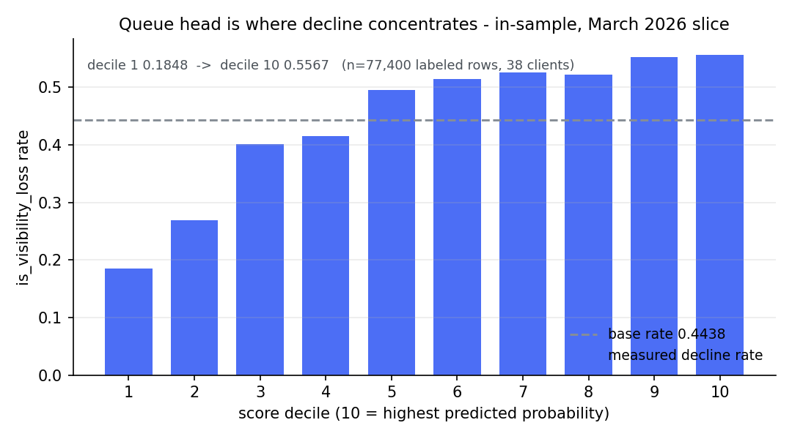
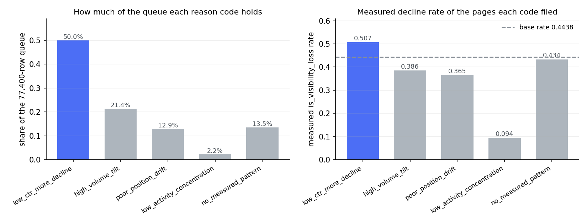

Question: A content team managing thousands of pages across dozens of clients has one editor who can review only a handful of pages per cycle — and no defensible order for which ones to look at first.
Data: 151,981 page-level rows from the FlyRank internship warehouse (month=2026-03), rolled up from 9,841,378 daily Search Console observations across 38 pseudonymized clients, with 77,400 pages earning a label after requiring at least 100 first-half impressions.
Method: Five features from the first half of March 2026 (log impressions, CTR, average position, active days, log age) feed a logistic regression; the label is whether a page's second-half impressions fell below its first-half impressions — a within-month proxy, not a forecast. Validation uses GroupKFold(5) by client so no client appears in both train and test.
Result: The model clears random ranking modestly — grouped AUC 0.5902 vs 0.5000, grouped P@50 0.4800 vs 0.4080 for random ordering — and does not separate from the hand-written rule baseline at P@50 (0.4360, same folds); the only measured pattern that clears the base rate is low CTR (decline 0.5072 below median vs 0.3804 above).
Use: The output is a reading order with per-page reason codes, not an automation. No refresh action is assigned anywhere in the queue, because the best measured lift any pattern shows over the 0.4438 base rate is +0.0634 — not enough to tell an editor to change a page.
A content team at FlyRank manages thousands of pages across dozens of client sites. One editor reviews a few pages per cycle. That is the binding constraint — not the data, not the tooling, the editor's calendar.
The team already collects the ingredients. Search Console gives impressions, clicks, average position, and the number of days a page was active. All of it is there. What was missing is an order: a defensible answer to the question of which pages deserve a look first.
The absence matters more than it sounds. Without an order, the queue gets built by whatever sort is easiest, and sorting by impressions descending is the easiest sort there is. That approach puts the largest pages at the top whether or not anything is wrong with them, and it systematically buries small pages that are failing. The alternative is an editor's memory — a real signal, but one nobody can write down, hand to a colleague, or check against six weeks later.
So the problem is a triage problem: a large population of pages, a small reviewing capacity, and no defensible order. The population here is 151,981 page-level rows across the first half of March 2026, of which 77,400 have enough volume to carry a label.
The honest framing is decision-support, not prediction. The model does not forecast what will happen to a page in April. It takes a large population of pages, orders it by a measured relationship to an outcome that has already occurred inside the same month, and hands a person a shorter list to read. A model that ranks a queue well is useful even when it is wrong often, as long as its top of the list is enriched relative to the population it is drawn from.
| Item | Value |
|---|---|
| Warehouse release | FlyRank internship warehouse, month=2026-03 (fact table partitioned by month) |
| Source tables | fact_content_daily_performance (daily GSC facts); dim_content (page metadata: content_created_date); dim_clients (used only for a coverage check) |
| Daily rows in the month | 9,841,378 |
Rows surviving gsc_data_available IS TRUE | 3,611,061 (36.7%) |
| Page-level feature-frame rows (15-day feature window) | 151,981 |
| Labeled rows (≥ 100 first-half impressions) | 77,400 (50.9% of frame) |
| Clients contributing labeled pages | 38 (uneven: median 485 rows, max 17,610; largest client 22.8% of the queue) |
Base rate (is_visibility_loss among labeled rows) | 0.4438 |
| Window | Range | Used for |
|---|---|---|
| Feature window | 2026-03-01 → 2026-03-15 | All five features — knowable at the decision moment |
| Outcome window | 2026-03-16 → 2026-03-31 | Label only — never a feature |
| Decision date | 2026-03-15 | The moment the editor would open the queue |
is_visibility_loss = 1 when a page's second-half March impressions are below its first-half March impressions — computed only for pages with ≥ 100 first-half impressions, so tiny pages don't set the label. This is an honest within-month proxy for "this page is losing search visibility." It is measured from the outcome window, which is never used as a feature.
| Feature | Definition (feature window only) | Available at decision moment? |
|---|---|---|
f_log_impressions | ln(1 + first-half GSC impressions) | Yes — every input row was delivered by the daily sync on or before 2026-03-15 |
f_ctr | first-half clicks ÷ first-half impressions | Yes — clicks arrive in the same daily sync as impressions, all dated ≤ 2026-03-15 |
f_avg_position | mean GSC position over impression-days in the first half | Yes — averaged only on dates ≤ 2026-03-15 |
f_active_days | number of distinct first-half days with ≥ 1 impression | Yes — the 15-day window is already complete at the decision |
f_log_age_days | ln(1 + days between page creation and 2026-03-15) | Yes — page creation date is static metadata known before any March data |
sessions_*, scroll_events, ai_sessions, etc.): this question is about search visibility, and GA4 rows carry a three-valued availability flag (TRUE / FALSE / NULL) with zero-filled early history — mixing a second, messier measurement system buys noise, not signal.dim_clients.gsc_data_start as a feature: it is context for checking coverage, not a per-page signal._sample table: it holds the panel's last month and would let me peek at my own test window.health_score, priority_score, etc.): deliberately absent from this dataset — they must not be rebuilt as features.trend_direction / trend_pct: these are label-derived fields (see §3.4). They are kept out of every feature list.LogisticRegression(max_iter=500, C=1.0) — no scaler, five features, class_weight="balanced". Selected because the lane is a ranking problem on a small feature set, and a linear model's coefficients are the reason codes: the signs and magnitudes are the story the paper tells about what the model found. A tree or ensemble would score the same ranking task and would not give the paper a reason column it can read.
GroupKFold(5), grouping by client_hash_id. No client appears in both train and test. This is the minimum honest split for a panel where one client dominates the row count.
| Split | AUC | P@50 (model) | P@50 (random ranking) | Notes |
|---|---|---|---|---|
Grouped by client (GroupKFold(5)) | 0.5902 | 0.4800 | 0.4080 | Folds: 0.4666–0.6547, SD 0.0646. One fold is below chance. Quoted everywhere. |
| Random row split (seeded shuffle) | 0.6262 | 0.5600 | — | Quoted as contrast only. 0.036 of the grouped gap is client memorization, not generalization. |
The single most common leakage trap in this dataset is a feature derived from the label's own inputs. The paper runs a deliberate leak test and keeps the result in the leakage section rather than hiding it.
| Run | Features | Quick AUC (3-fold) | What it means |
|---|---|---|---|
| Honest run | 5 features only | 0.6262 | The number the model actually earns from the feature window. |
| Leak test (deliberate) | 5 features + ln(1 + second-half impressions) | 1.0000 | Near-perfect — the added column reuses the outcome window. This is the trap; the score means nothing here. |
| After removal | 5 features only (leak column deleted) | 0.6262 | The honest number survives. The leak column is gone from every final feature list. |
trend_direction and trend_pct are absent from the model matrix. The label is defined from the outcome window, and no column that touches the outcome window is used as a feature. The leak test proves the check can fail; the clean run is the only result the paper quotes.
A hand-written rule from Week 4, built before any model was trained. It uses only feature-window columns — no label input. The rule scores P@50 0.4360 on the same grouped folds (fold range 0.20–0.58). The baseline is a comparator, never a feature; the gap between the model and the rule is reported in §4 with the rule's fold spread attached.
Five features, unchanged from w03: f_log_impressions, f_ctr, f_avg_position, f_active_days, f_log_age_days. Every number in the paper traces back to this list. The feature list is the same in the data section, the methodology, the result caption, and the reproducibility notes — one list, not four.
| Method | Split | AUC | P@50 | Base rate |
|---|---|---|---|---|
| Random ordering (reference) | Grouped, same folds | 0.5000 | 0.4080 | 0.4438 |
| Week-4 hand rule (baseline) | Grouped, same folds | — | 0.4360 | 0.4438 |
| Logistic regression (this work) | Grouped, same folds | 0.5902 | 0.4800 | 0.4438 |
The model clears random ranking on both metrics. The gap over the rule is +0.0440 at P@50 — but the rule's own per-fold values swing from 0.20 to 0.58, so that gap sits inside the rule's fold-to-fold noise. The comparison is reported as unseparated, not a win. A 0.0440 difference on a metric whose baseline moves 0.38 between folds is not a result, and the paper does not claim it is.


low_ctr_more_decline files a group above the base rate.Low CTR is the signal that held. Split at the median CTR of 0.00135: pages below it decline at 0.5072; pages above it at 0.3804 — a 0.1268 gap on 77,400 rows. low_ctr_more_decline is the only one of the five reason codes whose assigned group finishes above the base rate (0.4438).
The age heuristic is backwards. The assumption going in was that older pages decay more — a reasonable editorial prior and a common refresh rule. Measured, the oldest quartile declines at 0.3707, the lowest of the four, below the newest quartile at 0.4074 and below the base rate. The pattern is not monotone; it peaks in the second quartile at 0.5458. The stale_high_traffic reason code was dropped and assigned to zero pages. A prior that runs backwards in the data is worth reporting precisely because it was plausible before the measurement.
The activity signal is the opposite of what was expected. The coefficient on f_active_days is +0.6803 — positive, so more active days goes with more decline, not less. Pages active on 10 or fewer days decline at 0.1251 against 0.4948 for pages active on all 15 days. 79.2% of labeled pages sit at 15/15 active days, so a rank-based "bottom third" cut was meaningless — it fired on fully-active pages. The cut is now absolute (≤ 10 days), and the code's action is monitor_low_priority, never a refresh.
CTR and active days are tied, not ranked. On permutation importance in the grouped fold, f_ctr scores 0.0602 ± 0.0026 and f_active_days scores 0.0596 ± 0.0015. They overlap within one standard deviation, so the two are tied rather than ranked. The defensible claim is that CTR produced the only reason code with a measured lift — not that it is the model's strongest lever. f_avg_position at 0.0010 ± 0.0017 is indistinguishable from zero.
The best measured lift any single pattern shows over the base rate is +0.0634 (low_ctr_more_decline, on a label whose own base rate is 0.4438). That is not enough evidence to tell an editor to change a page. So no reason code in the shipped queue is assigned a refresh action, and the whole queue is a reading order. Every action below is a look; deciding to refresh stays a human decision made outside this artifact.
| Reason code | Feature pattern | Standalone decline rate | Lift vs base rate | Action assigned |
|---|---|---|---|---|
low_ctr_more_decline | f_ctr below labeled-frame median (0.00135) | 0.5072 | +0.0634 | ctr_review — look at intent match |
high_volume_tilt | f_log_impressions at or above top tertile | 0.4629 | +0.0191 | monitor |
poor_position_drift | f_avg_position above labeled-frame median | 0.4620 | +0.0182 | position_check |
low_activity_concentration | f_active_days ≤ 10 | 0.1251 | −0.3187 | monitor_low_priority |
no_measured_pattern | none of the above | 0.4336 | −0.0102 | monitor_low_priority |
Table — Each reason code measured standalone (every row its pattern matches), before the priority contest. After the contest, only low_ctr_more_decline files a group above the base rate; the other four land at or below it. The queue is close to a single-signal queue with a CTR split on top.
The audience is one person: an editor opening a queue on the morning of a decision date and asking "which pages do I look at first, and why?" This section is decision-support. It is not an automation.
| Priority | Recommendation | Why (measured basis) | Confidence |
|---|---|---|---|
| 1 | Look at low-CTR pages first. Open the page and check intent match, not a verdict. | Below-median CTR pages decline at 0.5072 vs 0.3804 above — the largest measured gap in the frame, on 77,400 rows. low_ctr_more_decline is the only reason code with a measured lift over the base rate. | Directional — the gap is real on this label, but CTR is tied with active days on permutation importance, so it is not cleanly the top lever. |
| 2 | Check position trend by eye, don't trust the average. A page that sat at position 4 all month and a page that fell from 2 to 20 get similar f_avg_position values. | f_avg_position is a 15-day average, not a slope. Permutation importance is 0.0010 ± 0.0017 — indistinguishable from zero on its own. The feature prompted a look, not a finding. | Low — the feature barely moves held-out AUC. |
| 3 | Monitor high-volume pages — don't over-read the tilt. | high_volume_tilt standalone decline rate is 0.4629, lift +0.0191. Small. Mostly a "watch" signal. | Directional, weak. |
| 4 | Do not refresh pages flagged by low_activity_concentration. These pages declined least of any group. | Pages active ≤ 10 days decline at 0.1251 vs 0.4948 for 15/15 days — lift −0.3187, the lowest of any group. The coefficient is positive (+0.6803): more active days goes with more decline. | Measured — the negative result is the finding. |
| 5 | Do not auto-decide anything from this score. | Best measured lift over base rate is +0.0634. Grouped AUC 0.5902 cannot carry a destructive action. No code earns review_for_refresh. | Strong — the number says so, not the prose. |
f_log_age_days is creation age, and its measured coefficient is negative (−0.2028) with the oldest quartile declining least (0.3707). Age is not evidence of decline here. Check the last update date, which this frame does not contain at all.f_avg_position is an average over impression-days in one 15-day window. A page that sat at position 4 all month and a page that fell from 2 to 20 get similar values.f_ctr has the largest permutation importance in the grouped fold (0.0602, tied within one SD with f_active_days), so this is the question the model most depends on — and the reviewer's job is to ask what the page is for.https://github.com/Sukuna310/MY-Flyrank-ml-internship-starterwork/outputs/warehouse_cache/ (fact_2026-03.parquet + dim_content.parquet). The notebooks read from that cache; they do not download from HuggingFace at run time. To refresh the cache, follow the access steps in skills/flyrank/flyrank-data (request access to FlyRank/internship-warehouse on HuggingFace, accept the data-use terms).work/notebooks/capstone.ipynb — re-runs the frame SQL, re-fits the model, re-derives the reason codes, and re-checks reproducibility. Open in Colab (badge at the top of the notebook) or locally with jupyter nbconvert --to html --execute work/notebooks/capstone.ipynb.work/notebooks/w07_action_playbook.ipynb re-runs the frame SQL and re-verifies every metric against w06 out-of-fold. The receipt table in §5 of that notebook reports match/no-match for each number.RANDOM_STATE = 42 (logistic regression, decision tree, random forest in the pipeline).np.random.default_rng(42).GroupKFold(5) — deterministic given the group labels, no shuffle seed needed.n_repeats=5, no custom seed (the SDs reported are from those repeats).requirements.txt at repo root for pinned packages).pandas, numpy, scikit-learn, duckdb, matplotlib.scripts/ (01–05) are the reference run; they are not edited. The work notebooks in work/notebooks/ are the capstone artifacts.The frame SQL ends in a stable ORDER BY, so re-running it must reproduce the frame. It does not reproduce bit-for-bit: f_avg_position is a parallel AVG in duckdb, and parallel float addition is not associative, so it moves by ~4e-14 between identical runs. Everything reported is many orders of magnitude above that noise floor. The same applies one step downstream to predicted_probability. The head of the queue is unchanged across runs; the exact tail ordering of pages that score identically is not guaranteed stable, and the paper does not quote it.
| Artifact | Path |
|---|---|
| Capstone notebook (mirrors this paper) | work/notebooks/capstone.ipynb |
| Data contract notebook | work/notebooks/w03_data_contract.ipynb |
| Validation audit notebook | work/notebooks/w06_validation_audit.ipynb |
| Action playbook notebook | work/notebooks/w07_action_playbook.ipynb |
| Ranked queue CSV (77,400 rows, gitignored) | work/outputs/action_playbook_queue.csv |
| Playbook metrics JSON (all receipts) | work/outputs/playbook_metrics.json |
| Queue decline profile figure | work/figures/queue_decline_profile.png |
| Reason code breakdown figure | work/figures/reason_code_breakdown.png |
| Reference pipeline (not edited) | scripts/01_prepare_features.py … scripts/05_build_pdf_report.py |
| This paper (deployed) | docs/index.html (this file) |
Built on the FlyRank ML Internship dataset. The data behind this paper is a real, anonymized slice of production search intelligence — 9,841,378 daily Search Console observations across the March 2026 panel, hosted at the FlyRank internship warehouse on HuggingFace. Crediting the data source is standard research practice; it tells readers the data is real and lets them find the source.
Data source: FlyRank AI — https://flyrank.ai
Warehouse: FlyRank/internship-warehouse (gated: request access + accept the data-use terms; approval is instant).
The labeled frame, the model, the reason codes, and every number in this paper were produced by the author from that warehouse slice using the open-source pipeline in this repo. No client names, URLs, or private queries appear anywhere in this paper — only pseudonymized hash IDs and aggregate counts.
Thanks to the FlyRank ML internship track (Cohort 1, July 2026) for the data, the sessions, and the paper-clinic feedback that shaped the final structure.
work/notebooks/ — then submit the repo URL on the card.